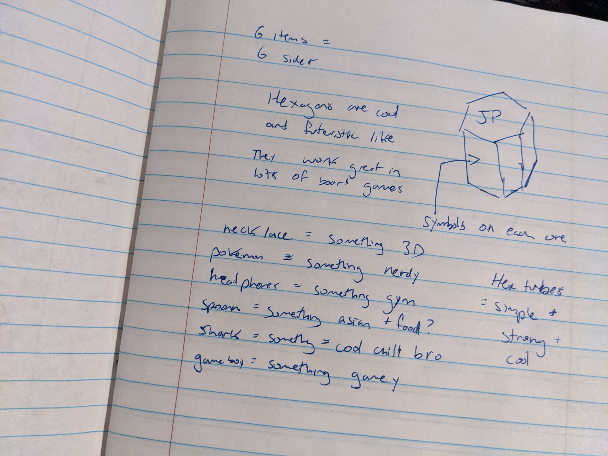
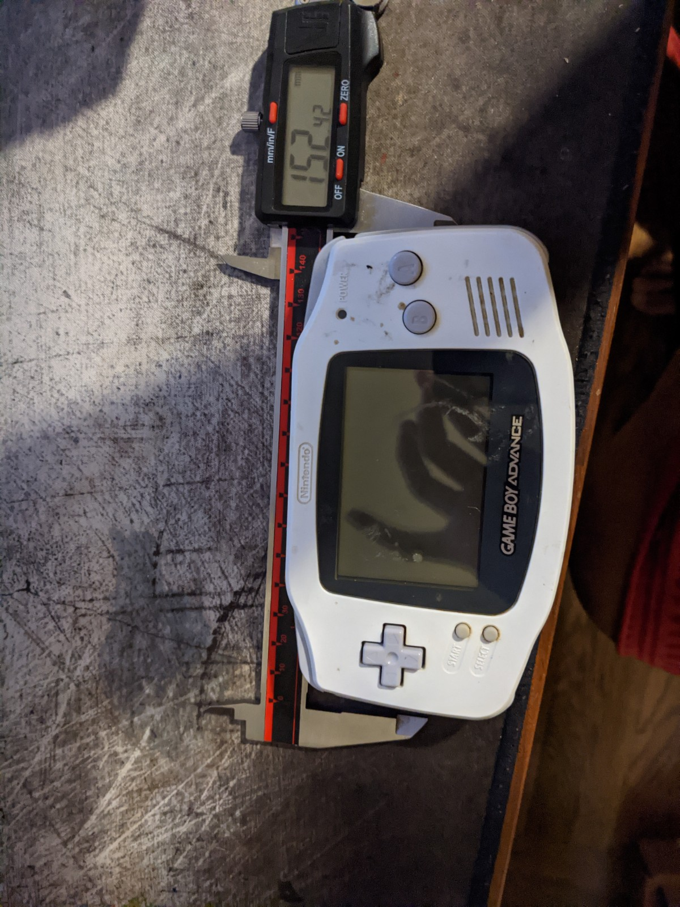
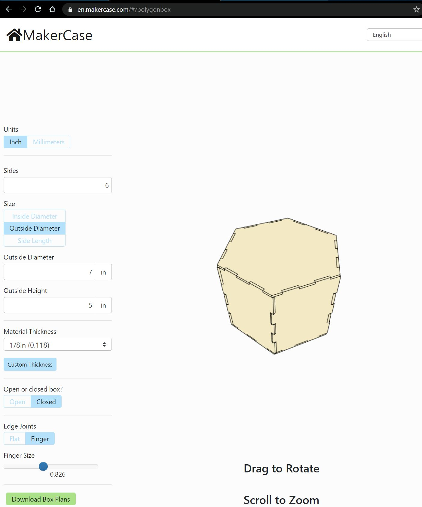
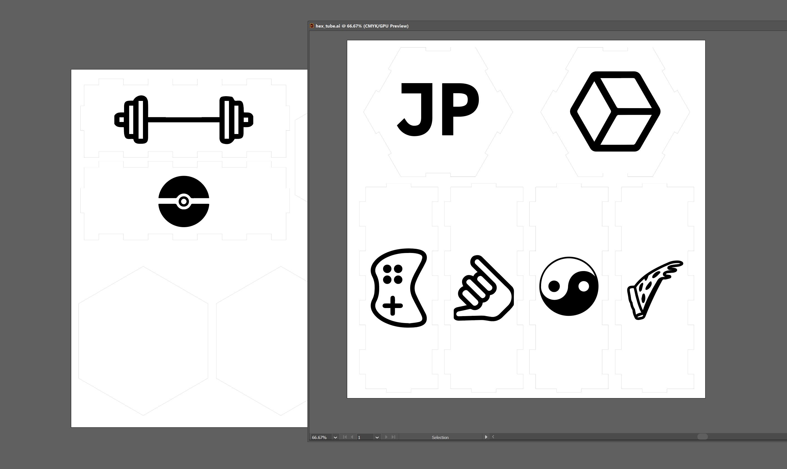
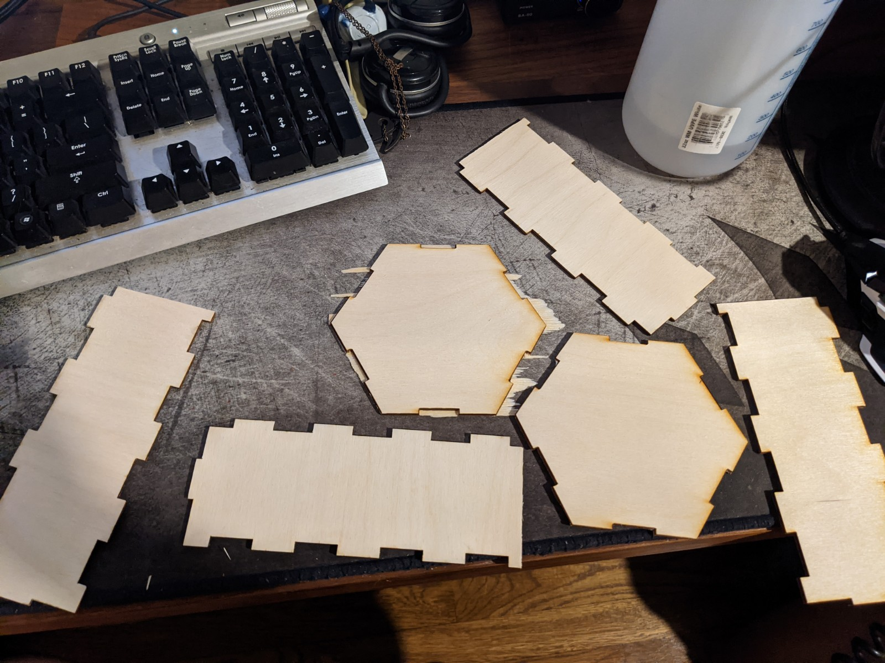
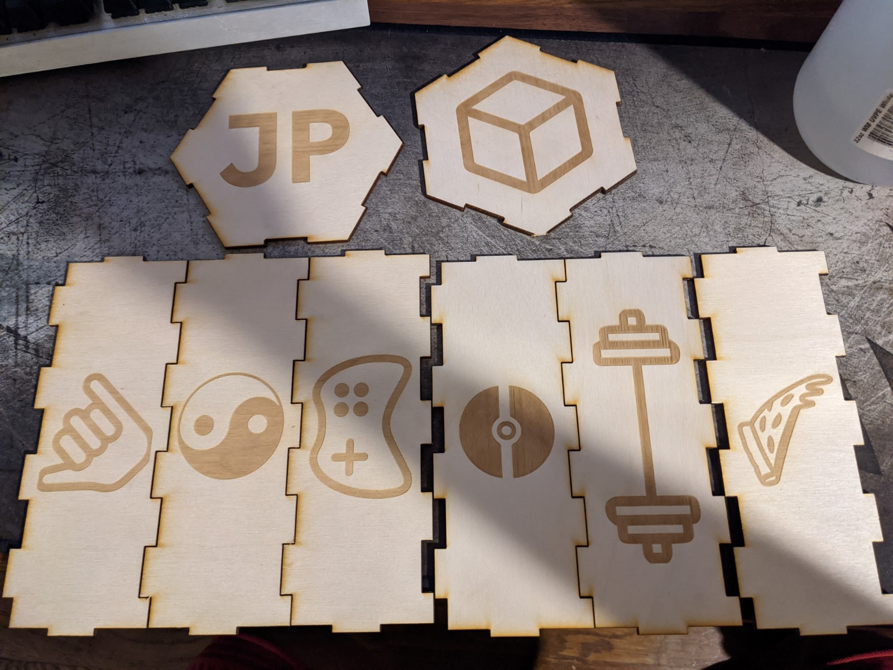
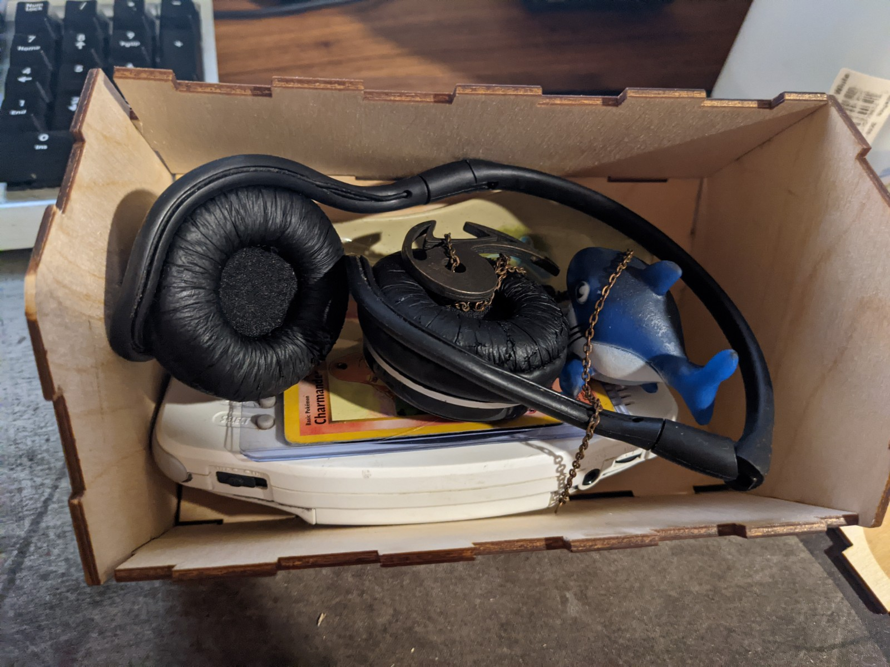
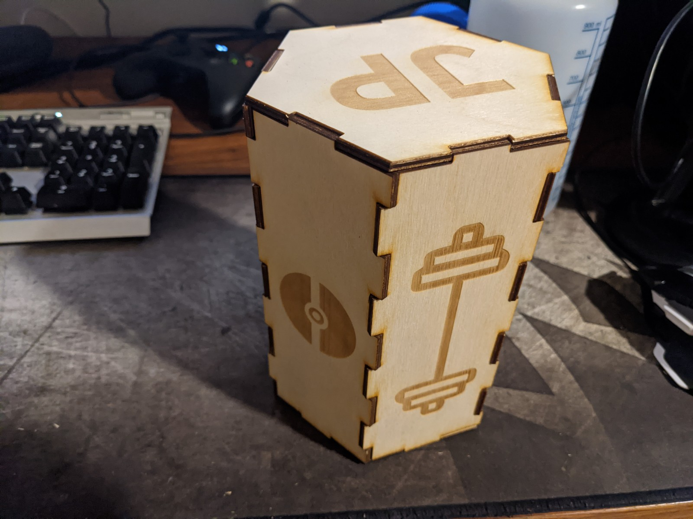
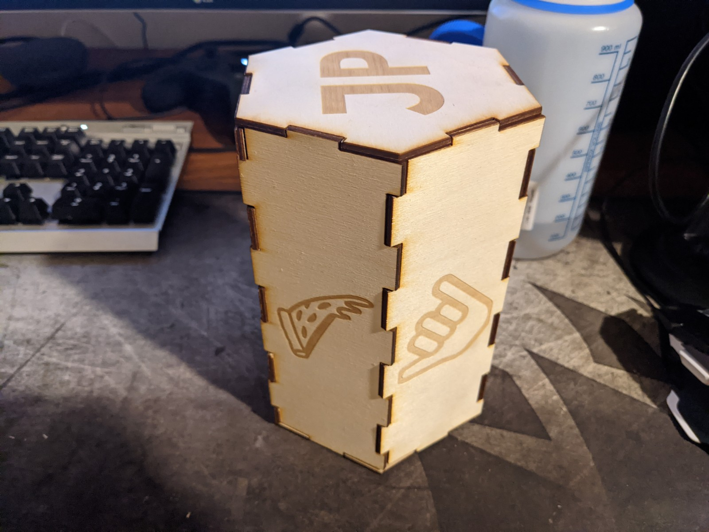
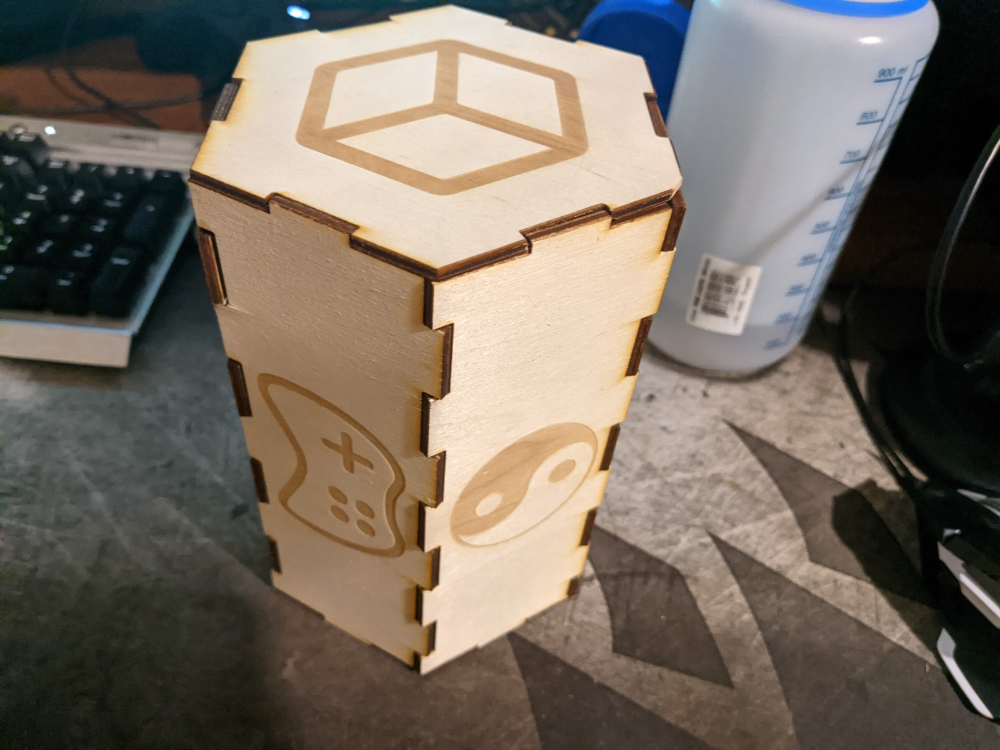

Ideation & Prototyping Week 8
Time Capsule #2 The Capsule
For this week, I thought up, designed, and fabricated a real time-capsule for my items last week.  The first thing I did was think about my design. I was thinking that a cool way to make my capsule personalized was to put on some symbols to represent what is in it since it is based on my personal story. Since I chose 6 items, I decided a hexagon-shaped capsule would be pretty cool. Random sidenote but I also like hexagons because of their utility in most modern board games. If you ever look at Sci-fi movies, artist love to make hallways hexagons, I have no idea why, maybe because they're just not the normal rectangle and because circular rooms are not as practical, but anyway they give off a futuristic vibe because of that.  I pulled out the trusty caliper that I usually use to measure things that I want to 3D print and went ahead and measured the largest thing in my capsule. The GameBoy Advanced was my largest thing, I rounded up with extra breathing room and did 5 inches for the height and 7 inches for the width. I'm pretty well versed in 3D printing but I decided to go with laser cutting for this project. Mainly because I wanted to try out something new but also because things like containers make more sense to use subtractive fabrication since they aren't complex or anything. Part of my personality is also to leverage cool technologies so I think laser cutting was perfect for the job.  The next thing I did before trying to make a hexagon-shaped tube from scratch was to see if anyone else had made anything like that before. It would take a load of time to figure out tolerances and math to get everything right since I didn't have that much experience with laser cutting.  After I got the shapes downloaded, I pulled them into Adobe Illustrator to place them nicely on a 12x12 inch canvas. The maker space at NYU sells 12x12 pieces of thin wood for laser cutting for $2 each so I was able to get all the pieces on just two pieces. I did some Illustrator traces and got some cool icons to put on each panel as well as my initials in a cool font and an additional icon beyond my original 6. I figured a ying-yang would be a nice symbol to represent my balanced personality, Asian roots, as well as my logo. I choose a slice of pizza for my spoon since it's one of my favorite foods and also represents being from NJ where pizza is good. A game controller for my GameBoy, a 3D cube for my 3D printed necklace, a barbell for my gym headphones, a Pokeball for my pokemon, and a the hand sign for chill/cool for my steady shark.  My first attempt at this was kind of a waste, I only had about 45 mins of time available since I booked time in the makerspace before class. The symbols didn't show up because I set it to vector only and not vector+raster, the nubs on one end of the 4 pieces didn't fit so they got cut off, and the lazer didn't cut deep enough.  This weekend I was able to book an hour and a half, so I went into the city on the train, did some motion capture, and went ahead and took my time this time. I figured out a neat little test thing that I do now. By setting the power low and speed high, I can get a barely visible trace on the wood to make sure it fits. Once it was done, I had the laser go default for the raster images, but super slow on the cuts as well as high power. I then have it cut again without moving the wood with just the cuts again, to get it to cut deeper. I let it cut about 3-4 times to get it to cut cleanly off, the machine they have in the lab must be old and worn out or something. Two of my pieces didn't cut perfectly but I was able to force it together so It still worked out fine.  The items fit perfectly as planned with a bunch of extra room to spare. Overall I was pretty happy with the results, I'm glad I got some time to learn how to use a laser cutter properly and I think the product come out pretty cool. I think that if this were a real time-capsule, I think I would do the same thing but use aluminum instead, weld the thing together and lock the last panel with a latch or something.   
home
while (!deck.isInOrder()) {
print 'Iteration ' + i;
deck.shuffle();
i++;
}
print 'It took ' + i + ' iterations to sort the deck.';